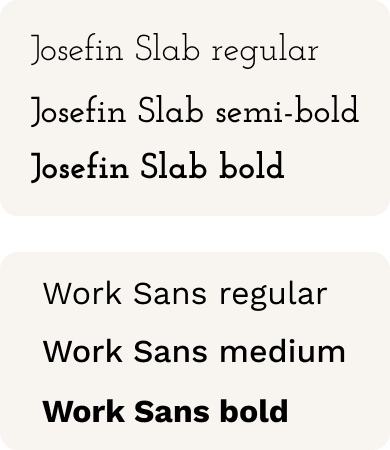

Unwrap
view prototypeOverview
What is the first thing that comes to your mind regarding “eco-friendliness”? Recycling? In the user survey, the majority of respondents picked “recycling” as the most effective method. But sometimes, "recycling is a distraction to our growing waste problem". A lot of recycled products cannot be further recycled and will end up in the landfill as well. To save the environment, we should aim at creating zero trash.
But in some cases, it is not always feasible. For hygienic reasons, used tissue paper as well as the gloves and masks used by surgeons in an operation should not be reused. On the other hand, some manufacturers tend to package dry food items individually in disposable containers, which creates unnecessary waste. Despite knowing these issues, many consumers are unable to act upon it. Some find it hard to locate zero waste stores while others find the products too expensive.
To tackle these problems, I created Unwrap. It is a mobile app design that aims to help users find zero waste stores, read reviews, and save points on each spending in return for discounts and gifts. With these functions, it is easier for shoppers to find zero-waste alternatives and store owners can retain more customers.
My roles |
Deliverables |
Methods/ Tools |
|
UX research |
|
|
|
UX/UI design |
|
|
|
Visual design |
|
|
|
Motion Design |
|
|
|
Market research |
|
|
Problems
|
Consumers
|
Zero waste store owners
|
Solutions
-
Page #1: Search


Results are available in list-view or map-view. Users can also learn about the store’s information (e.g. opening hours, location, contact details, and reviews).
-
Page #2: Data
Users can check how much material they have saved and the zero waste products that they bought most.
-
Page #3: Tree
There is a loyalty program for regular customers to save points (or in our case, seeds) to redeem gifts and discounts. This can also help store owners retain customers.
-
Page #4: Profile

Users can bookmarks stores they want to visit and save them on their profile page.
User research
Survey
To understand how people think about zero waste shopping, I created a survey with 3 parts.
Part 1: Ideas on Environmental Protection
What do you think is the most effective way to help the environment?
Among the 30 respondents, the majority voted “recycling items” (99.6%) to be the most effective method to protect the environment. Other common methods include “bring your own bag” (89%) and “reusing items” (83%). Only 38% of the respondents believe that zero waste shopping is an effective method.
Implications
A lot of people seem to value recycling over the concept of zero waste. But according to the owner of “Earth, Food, Love”, recycling is a distraction to our growing waste problem.
That is because while certain material can be recycled to create other products, those products cannot be further recycled. They will end up in landfill just like other non-recyclable waste. That is why recycling is not enough to improve our environment. We need to create less (if not zero) waste.
Part 2: Awareness of Zero Waste
|
1. Have you heard about zero waste stores? |
|
2. How often do you buy from zero waste stores? |
While 67% of the respondents have heard of “zero waste stores”, only 30% have bought from zero waste stores. In the follow-up interview, users said the main reasons they could not commit to zero waste shopping was because:
-
They do not know where the shops are.
-
zero waste products are too expensive
-
They worried that package-less items are not always hygienic
To tackle these problems, I should include in my solution (1) the location and opening hours of stores, (2) a loyalty program with discounts and gifts for regular customers, and (3) reviews from customers to potential customers.
Part 3: Consumption Habits, Goals and Frustrations
1. How did you come across zero waste stores?
There is, indeed, a lack of online presence and promotion for the majority of zero waste stores.
2. If you could have a personal account from zero waste stores, what type of info do you want to see?
Zero waste shoppers
Non zero waste shoppers
The majority of respondents, regardless of their consumption habit, would like to see how much resources they can save. This makes sense because such data is not easily available on a daily basis. Providing this information to consumers will also boost their incentive to continue buying from zero waste stores.
Personas
Based on the demographic info of my respondents, I created 3 personas.
|
Sophie Lifestyle: She leads an eco-friendly lifestyle and tries her best to create no trash. She also likes to promote ways to help the environment on her social media. Frustrations:
Wishes:
“While we gain efficiency out of disposables, our earth suffers.” |
Michelle Lifestyle: She has a busy daily work schedule and so she has to prioritize efficiency above all else. But she is also willing to try an eco-friendly lifestyle if it is not too inconvenient. Frustrations:
Wishes:
“There must be more we can do to help the environment without trading off our time too much.” |
Peter Lifestyle: He is the owner of a zero-waste store and is committed to a zero-waste lifestyle. But he is not very tech-savvy and does not know how to promote his stores online. Frustrations:
Wishes:
“It’s not just about banning plastic bags. It’s about being conscious of your every decision and how it plays a role in our shared world.” |
User Stories
The goals and frustrations mentioned above can be summarised in the following table:
As a customer:
|
High |
I’d like to locate the zero waste stores in my location. |
|---|---|
|
High |
I’d like to know in a glance which are the stores that are still open. |
|
High |
I’d like to understand how zero waste consumption can contribute to the ecosystem. |
|
Medium |
I’d like to get discounts and gifts for my loyalty to zero-waste shopping. |
|
Medium |
I’d like to read reviews of the stores that I’m interested in. |
As a zero waste store owner:
|
High |
I want to promote my shop to new customers. |
|---|---|
|
High |
I’d like to see more returning customers (not just one-time enthusiasts). |
|
High |
I want people to understand how their consumption habit can impact the environment. |
|
Medium |
I’d like to get feedback from my customers on what they like and dislike about my store. |
|
Medium |
I want to learn about other zero-waste stores as well. |
Competitive Analysis
I evaluated three apps which have similar functions: Happy Cow, Starbucks, and AirBnB.

|
||
|
Pros:
|
Cons:
|
|
|
Pros:
|
Cons:
|
|
|
Pros:
|
Cons:
|
|
Learning from these apps, Unwrap should make the search process intutive and the information optimized for mobile view.
Search zero waste stores:
View results (list view & map view)
Check data
Sketches & Wireframes
Some of the sketches:
Some of the wireframes
User Testing of Wireframes
In the test, I asked participants to describe what they thought the pages were about and explained how to navigate to different pages.
Here is what I've learned:
1. Highlight important information to save the user's time
I learned that if users cannot immediately tell apart a list of information while skimming, it is already considered not user-friendly. To save the user’s time, I created a color-coded earmark system.
|
BEFORE |
|
AFTER |
Green indicates stores that are open, yellow are those which are closing, and dark grey are those which are closed.
2. Write precise titles
Given the limited space on a mobile screen, I prioritized short titles in my initial design. However, some users found the title “How I spent” confusing because the chart which follows is not a complete summary of every item (zero-waste or not) the user bought.
|
BEFORE |
|
AFTER |
In the revised version, I changed to the title to “Zero waste products I bought”. It’s longer but it makes more sense to users.
3. Make navigation easier
I also tested the mode of navigation.
|
Hamburger menu |
Bottom navigation |
The majority of users chose bottom navigation over side menu because they just need to tab on the icon to go to their desired page. Conversely, the hamburger menu option requires users to open a side menu and find the page from the menu.
Mockups
Based on the revised wireframes, I created a mockup. Here are some of the pages:
User Testing of Mockups
Here is what I've learned:
Use icons for clarification
In the user test, I learned to not overlook details. For example, some users mistook the “review” button as reading reviews instead of writing a review. In the revised version, I added a pen icon to make it explicit that it is a button for writing reviews.
|
BEFORE |
|
AFTER |
In the revised version, I added a pen icon to make it explicit that it is a button for writing reviews.
Branding
Logo
The app is called “Unwrap” which stands for the unwrapping of packaging material. To illustrate this idea, I aimed to create geometric logo that depicts both the earth and idea of over-packaging.
At first, I thought of using an earth and a plastic bag. But it’s too complicated. I then simplified it to a sphere with 4 slices to suggest a sense of rotation:
When the icon is minimized, however, the details are merged. As a result, I further simplified it into two semi-circles and a square:
Launch animation
|
To show the user what the logo is based on, I created a launch animation: |
Colors
|
The colors I chose are primarily green and yellow as they are often associated with eco-friendliness and the environment. Following the Material Design guidelines, I named the colors as Unwrap Light Green 800, 900, Unwrap Yellow 700, and Unwrap Yellow 50 respectively. |
Typography
|
As for the brand type, I chose Josefin Slab because of its thin and minimalistic presentation. It is only used in the brand name. All other text are in Work Sans as it is highly legible across small and large print. |
 |
Interactive Prototype
1. Language localization
This app aims to serve people from around the world. Apart from English, this app is also available in some of the most popular languages.
2. Search page
Users only need to enter key phrases to search. The suggested results include both store names and location names.
3. Search results
The result is available in list-view and map-view. In the store-details page, users can see detailed information and reviews about the store.
|
|
|

|
4. Information architecture
Designing the information architecture on the card was challenging. On the one hand, I should keep the card short so that it is optimized for mobile experience. On the other hand, all the key information need to be shown on the card.
In the end, I came up with the following design:
Each card is composed of two sheets: the image and the info. I made the info sheet slightly transparent and overlapping one-third of the image. This allows users to see most of the image and grasp the name and overview of the store. The non-overlapping section shows the location and opening hours. These are crucial information and so I left the background plain.

(1)Store name & overview, (2) Location & opening hours
5. Data
Users will only see the exact amount of products they saved when they click on each bar. This can prevent the screen from getting too crowded.
6. Profile & Tree
Users can save stores they want to visit in their profile page. Regular customers can also see how many points (or in our case, seeds) they have saved and the gifts they can redeem.
|
To learn more, click on the button below:
view prototypeReflection
In face of climate change, one thing we should do is to create less waste. This can save resources and reduce the amount of chemicals used for disintegrating waste.
But in reality, even if customers want to explore/ promote zero waste shopping, the situation is not always easy (see: "User Research" Section). As a result, I created Unwrap to hopefully make zero waste shopping a habit.
If I had time to push the design further, I would add a function for users to send seeds and coupons to friends to strengthen the Unwrap community.